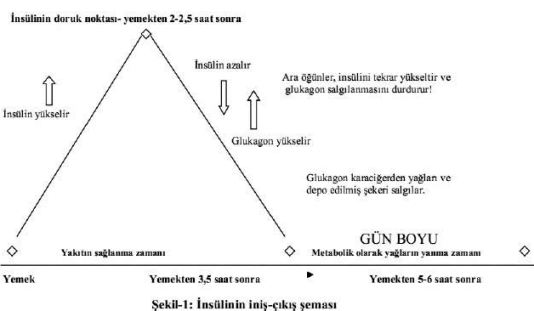

‘Kilo almak’ ve ‘kilo vermek’ ne demektir?
Kilo almak, vücudumuzda istemediğimiz yağların birikmesi (depo edilmesi) demektir. Bunun aksi de kilo vermektir! Diğer bir deyişle kilo vermek, vücut yağlarımızın yıkılması ya da erimesi anlamına gelmektedir.
O halde öncelikle yağların birikme mekanizmasını anlamamız ve bilmemiz gerekiyor...
Evet, işin sırrı bu mekanizmada! Hepimizin bildiği gibi, pankreasımızda üretilen ve salgılanan ‘insülin hormonu’, kan şekerimizi enerji olarak kullanmamızı sağlıyor. Peki, bundan sonra (kan şekerimizin kullanılamayarak artan kısmına) ne oluyor? İşte bütün sır bu sorunun cevabında saklı! Enerji fazlası durumundaki artık kan şekerimiz, ileride ihtiyaç halinde kullanılmak üzere ‘yağ olarak’ depolanıyor! Artmış olarak kanımızda dolaşan kan şekerimizi depoya göndererek vücudumuzda birikmesini sağlayan da insulin hormonudur.
Bu konuyu daha net olarak bir örnekle açıklayalım:
• Ağzımıza bir lokmayı alıp çiğnemeye başladığımız anda, kan şekerimiz ve kan insülinimiz birlikte yükselmeye başlar.
• Yemek yedikten ortalama 2-2,5 saat sonra ise insülinin etkisi sonucu kan şekerimiz (günlük yaşamımızı sürdürebilmek için gerekli olan enerjiyi sağlamak adına kullanılmış olduğundan) azalır.
• Kan şekeri, insülin hormonu etkisi ile nefes almamız, yürümemiz, yemek yememiz, kitap okumamız, evde veya işte çalışmamız, uykumuz vb işler için gereken enerjiyi sağlar... Aynen arabalarımızın motorunun çalışması için benzinin yakılması gibi, kan şekerimiz de insülin hormonu sayesinde yıkılmış ve bize o an için gerekli olan enerjiyi sağlamış olur. Bu nedenle yemekten 2-2,5 saat geçtikten sonra kandaki insulin hormonu ve şekerimizin düzeyleri giderek düşmeye başlar!
• Yediğimiz herhangi bir gıdadan sağlanan enerji çok fazla ise (aşırı miktarda gıda tüketilmesi durumunda ya da fizik aktivitemiz çok az olduğu için) bünyemiz yükselen kan şekerinin hepsini yakıt olarak kullanamaz! Bu durumda, insülin hormonunun ikinci görevi devreye girer.
• İnsülin hormonunun önemli ikinci görevi, artmış kan şekerini depo yağlarına dönüştürerek (trigliserid) vücudumuzda yağ olarak depolamasıdır.
• Bu arada yemek yedikten aşağı yukarı 2-2,5 saat geçtikten sonra vücudumuza enerjinin (yakıt ve benzin) sağlanması amacı ile bu sefer pankreasımızdan glukagon denilen bir hormon daha salgılanır.
• ‘Glukagon hormonu’ da karaciğerimizde önceden depolanmış olan yedek şekerin kanımıza geçmesini ve yakıt olarak kullanılmasını sağlar. Bu şekilde motorun çalışmasını devam ettirebilmek amacı ile gerekli olan yedek yakıt kullanılmış olur. Karaciğer deposundan sağlanan yedek benzinin miktarı çok fazla değildir. Bu nedenle kısa süre içinde tükenir.
• Normal ve sağlıklı şartlarda, herhangi bir gıda yemeden ve acıkmadan 4-5 saat geçirebilmemiz; bu hormonların düzenli, yeterli ve etkili bir şekilde uyum içinde çalışmaları sonucu mümkün olmaktadır. Yemekten 2 saat sonrasına kadar insülin hormonunun, bundan 2 saat sonrasına kadar da glukagon hormonunun etkisi devrededir.
Peki, yemekten sonra 4-5 saat boyunca ağzımıza bir lokma koymazsak, motorumuza enerji nasıl sağlanıyor?
Bu zaman zarfında yani yemekten 4-5 saat sonrasına kadar, ağzımıza bir lokma dahi koymadan normal yaşamımızın devam etmesi amacı ile ‘leptin hormonu’ adında (son derece önemli olan) bir hormon salgılanmaya başlanır.
Leptin hormonunun görevi, vücudumuzun çeşitli bölgelerinde önceden depolanmış olan yağları yıkarak, vücudumuza gerekli olan yakıtı ve dolayısı ile enerjiyi sağlamaktır. Leptin hormonu, ikinci yedek depodaki benzinin yakıt olarak kullanılmasını sağlamaktadır.[1], [2]

İnsülin ve leptin hormonlarının çalışmalarını şöyle özetleyebiliriz:
• İnsülin hormonu, kan şekerinin yakıt olarak kullanılmasını ve kullanılmayan fazla kısmının da trigliserid[3] olarak (ileride kullanılmak amacıyla) depo edilmesini sağlar.
• Leptin hormonunun görevi ise depoda birikmiş olan vücut yağlarının enerji olarak kullanılmasını sağlamaktır.
• Leptin, 4-5 saat içinde bir şey yenmediği takdirde trigliseridleri (depo edilmiş olan yağlar ve kan yağları) kan şekerine dönüştürerek vücudun ihtiyacı olan enerjiyi sağlar.
İşte bu nedenlerle kilo verebilmemiz yani birikmiş olan yağlarımızın yakıt olarak yıkılması ve enerji sağlayabilmesi için, leptin hormonunun salgılanması şarttır. Daha önce belirtmiş olduğumuz gibi her yemek yedikten sonra ya da sık sık bir şeyler yediğimizde, kan şekerimizle birlikte insülinimiz de yükselmektedir. Bu alışkanlık devam ettiği sürece kanımızdaki insülin hormonu (doğal olarak) sık sık yükselecek ve devamlı olarak yüksek düzeylerde kalacaktır! Yakıt olarak kullanılmamış olan fazla kan şekerimiz de, sürekli yüksek olan kan insülin sayesinde yağ olarak depoya gönderilecektir. İnsülin hormonu, kanımızda hep yüksek düzeylerde kaldığı süre boyunca da yağlar devamlı olarak depolara gönderilecek ve bununla birlikte kilomuz da artacaktır. Sonuç olarak yağlar depo edilmeye devam ediliyorken, aynı anda yakıt olarak kullanılmaları ve yıkılmaları mümkün değildir. Bu nedenle sık sık yemek yediğimiz zaman enerjimiz artmış olsa bile, bu enerji yağların yanması için değil de, yağların depolanması için kullanılmaktadır. Doğal olarak bu süreç devam ettiği müddetçe kilo vermemiz imkânsızdır![4] Ara öğün yiyerek diyet yapmakta olan kişilerin, başlarda kilo verirken daha sonra verdikleri kiloları koruyamamalarının ya da kilo vermek yerine yavaş yavaş kilo almalarının nedeni, sık sık ara öğün yemelerinin sonucu kanlarında insülin hormonunun giderek yükselmesidir.
Sık sık yemek yemek metabolizmamızı hızlandırmaz mı?
Tabii ki hızlandırır... Ancak sık sık yemek yediğimiz zaman kan şekerimiz ve insülinimiz de sürekli olarak yükselmekte ve yüksek kalmaktadır. Kan insülin değerlerinin normal düzeylere inmesine imkân verilmemektedir. Daha önce de belirtmiş olduğumuz gibi, hızlı metabolizma ve yüksek kan insülin değerleri yağların yıkılmasını değil de yağların depoya gönderilmesini sağlar. Yağların depo edilmeleri sırasında ise birikmiş olan yağların enerji olarak kullanılmaları mümkün değildir! Yüksek insülin hormonu ayrıca karaciğerden fazla kolesterol yapılmasını da artırır, HDL denilen faydalı kan kolesterolünü düşürür ve kanı yoğunlaştırarak, kanın pıhtılaşmasını kolaylaştırır.
Özetle, her yemekten sonra insülin hormonu salgılanır. Daha önce dile getirdiğimiz gibi insülin hormonunun ikinci önemli görevi yağları depolamaktır. Uzun süre yüksek kalan kan şekeri, bu nedenle yağ olarak depolanmaktadır.
Burada banka hesaplarımızdan bir örnek vermek istiyorum:
Sık sık yemek yiyerek, cari hesabımızı kullanıyor gibi, sürekli hazır sunulan enerjiyi kullanıp yakıyoruz. Hatta kullanamadığımızda birikim olarak depo ediyoruz. Aynen vadeli bir banka hesabımızda giderek fazla para biriktirmemiz gibi, yağlarımızı da biriktirip artırıyoruz. Karatay Diyeti’nin amacı, cari hesaplarımızı bir an önce bitirip, vadeli hesabımızı da bozup kullanılmasını sağlamaktır. Ama insülin hormonu devrede olduğu ve devamlı olarak yüksek kaldığı süre içinde, vadeli hesabımıza girip harcamamız imkânsızdır.
Peki, vadeli hesabımıza nasıl ulaşıp, kullanacağız?
Bu, fizik aktivitenin artırılması ile birlikte leptin hormonunun normal bir şekilde görevini yapması sayesinde gerçekleşir.
‘Kilo vermede en kritik hormon leptin hormonudur’ diyebilir miyiz?
Diyebiliriz. Leptin hormonu, beyaz yağ ve pankreas hücrelerinde üretilip salgılanan, insan vücudunda beyaz yağ hücreleri tarafından depo edilen, 1994 yılında keşfedilmiş bir hormondur. Leptin adı, eski Yunanca ‘leptos ve thin=ince’ kelimelerinden alınmıştır. Tokluk hissini verme, açlığımızı bastırma, yediklerimizin yeterli olup olmadığını beynimize iletme gibi çok önemli görevleri vardır. Leptin hormonu, insülin hormonu ile birlikte vücudumuzun yakıt ve enerji düzeyini idare eder ve düzenler.
Leptin hormonu, bütün diğer hormonları kontrol eden bir hormondur. Yani vücutta bulunan diğer hormonlar, leptin hormonu olmadan çalışamazlar! Fakat leptin hormonu diğer hormonlar olmadan da çalışabilir.
Organizmada görev yapan bütün hormonlar arasında en son keşfedilen leptin hormonu, bir gemiyi yüzdüren birinci kaptanın görevini yürütür.[5], [6]
Leptin hormonu nasıl kilo vermemizi sağlıyor?
Normal fizyolojik şartlarda gündüz ve gece arasında hormonların salgılanması değişik zamanlarda meydana gelir. Gündüzleri her lokmadan sonra insülin hormonu salgılanmaktadır. İnsülin hormonu beyaz yağ hücrelerinde leptin hormonunun salgılanarak depo edilmesini sağlar. Leptin hormonu beyaz yağ hücrelerinde yeterli derecede üretilip depo edilince, fazlası kana geçer (bu depoların yeterli derecede dolduğunun göstergesidir). Kan düzeyi normal seviyelerde olunca, bu sefer leptin hormonu pankreastan insülin yapımını durdurur. İnsülin hormonunun salgılanması engellenince, kan şekerinin yağ olarak depolanması da duracak, kan şeker düzeyi azalmayacak ve tokluk hissi devam edecektir. (Gece ise durum daha da değişik oluyor, çünkü leptin hormonu en fazla ve yüksek düzeyde gece yarısından sonra saat 02:00-05:00 arasında salgılanıyor. Akşam geç vakit yemek yenmediği zaman leptin hormonunun maksimum düzeyde salgılanması da sağlanmış oluyor. Bu hormonun en iyi salgılandığı zaman, rahat ve derin bir uyku anlarıdır.)
Ancak sık sık bir şeyler atıştırılması ya da çok büyük porsiyonlar tüketilmesi sonucu insülin hormonu fazla miktarda salgılanacağı için, kan insülin düzeyi uzun süre yüksek olarak kalacaktır. İnsülin hormonunun sürekli olarak salgılanması, leptin hormonunun da sürekli olarak salgılanmasına neden olur. İnsülin ve leptin hormonlarının dolaşımda uzun süre yüksek olarak kalması, bütün dokularda bulunan insülin ve leptin hormonlarının komutlarını algılayacak olan hücrelerin (reseptörlerin), bu hormonların komutlarını işitemez hale gelmelerine neden olur. Bunun sonucunda leptin hormonu pankreasta bulunan hücrelere etki edemez ve insülinin salgılanmasını engelleyemez. Çünkü pankreasta insülin salgılayan hücreler, leptin hormonunun mesajlarını duyamaz hale gelmiştir. Bu durumda, kulağı az işiten bir insanla konuşurken nasıl ki sesimizi yükseltip bağırarak konuşursak, aynı şekilde insülin ve leptin hormonları da seslerini duyurabilmek için salgılanmalarını giderek artırırlar. Kan insülin ve leptin seviyelerinin giderek yükselmesine rağmen, dokular her iki hormonun da mesajlarını algılayamaz durumda olduklarından normal bir şekilde fonksiyonlarını yürütemezler.
Leptin hormonunun mesajını algılayamayan pankreas hücreleri, insülin salgılamaya ara vermeden devam edeceğinden, yağların depolanması da sürekli bir şekilde devam edecektir. Bu durumda ne kadar az yesek de, yavaş yavaş yağlarımız ve de kilomuz giderek artacaktır.
Bütün vücut dokularımızda; beynimizde, karaciğer ve pankreasta, kalp ve bütün kaslarımızda gelişmiş olan bu emirleri algılayamama durumuna, bilimsel olarak ‘insülin ve leptin direnci’ adını veriyoruz. Diğer bir deyişle ‘hiperinsülinemik hastalık’ diyoruz.[7], [8]
İleri yaşlarda görülen hastalıklara ‘dejeneratif hastalıklar’ denilmektedir. Bu hastalıkların ortaya çıkması, genel bir metabolizma bozukluğu sonucu olmaktadır. Metabolizma bozukluğunun altında bu bölümde anlatmış olduğumuz insülin ve leptin dirençlerinin yanı sıra, bir stres hormonu olan ‘adrenalin hormonu’ direnci de bulunmaktadır.
İşte genel metabolizma bozukluğu ve dejeneratif hastalıkların tümünün temelinde şu sacayağı yatmaktadır: